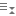

包
包是保存在数据库中的相关过程、存储函数及其他程序对象的封装集合。一个包包括两个部分：规格及主体。在主窗口中，点击 “其他”-> “包” 来打开包的对象列表。
包设计器和包主体设计器
“包设计器”和“包主体设计器”是一个用于设计包的 Navicat 基本工具。在包设计器保存包后，你可以编辑它的包主体，点击 。
同样地，你可以编辑它的包规格，在包主体设计器点击 。
你可以在“定义”选项卡中输入有效的 SQL 语句。若要自定义编辑器并查看更多 SQL 编辑功能，请参阅 SQL 编辑器。
“代码大纲”窗格显示包或包主体的信息包括函数、过程、参数、代码主体等。如果代码大纲窗格已隐藏，选择“查看”->“代码大纲”。
【注意】仅适用于非 Essentials 版。
按钮 |
描述 |
刷新代码大纲。 |
|
打开或关闭滑鼠移过时高亮显示。 |
|
显示代码大纲的详细信息视图。 |
|
切换按位置排序。 |
|
展开已选择的项目。 |
|
 |
折叠已选择的项目。 |
结果
若要运行包，请在工具栏点击  。如果 SQL 语句是正确的，该语句将被运行，以及如果该语句应该返回数据，“DBMS 输出”选项卡会打开显示返回的数据。如果运行包时发生错误，运行会停止并显示相应的错误信息。如果包需要输入参数，“输入参数”对话框将弹出。
。如果 SQL 语句是正确的，该语句将被运行，以及如果该语句应该返回数据，“DBMS 输出”选项卡会打开显示返回的数据。如果运行包时发生错误，运行会停止并显示相应的错误信息。如果包需要输入参数，“输入参数”对话框将弹出。
调试（仅适用于非 Essentials 版）
你可以在每句语句旁的灰色范围点击  来为调试添加或移除断点。
来为调试添加或移除断点。
在工具栏点击  来启动 Oracle 调试器。如有需要，输入参数。
来启动 Oracle 调试器。如有需要，输入参数。